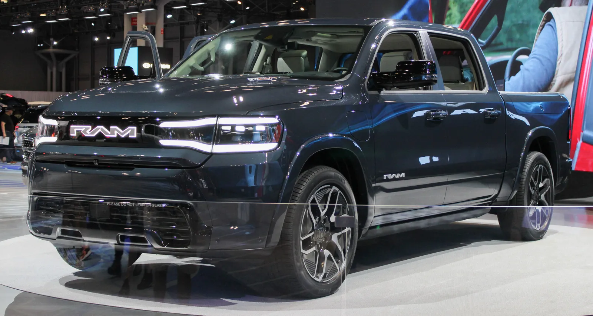

▲ 램 1500. 레인지 익스텐더 버전인 램 1500 REV(램차저)의 출시가 다시 한번 미뤄졌다 ⓒ Charles, Wikimedia Commons (CC0)
배터리와 엔진을 함께 얹어 두 세계의 장점만 취하겠다던 계획, 또 미뤄졌다.
스텔란티스가 야심 차게 준비해온 레인지 익스텐더 전기차(EREV) 두 종, 램 1500 REV와 지프 그랜드 왜고니어 EREV의 출시 일정이 나란히 뒤로 밀렸다. 순수전기 대형 픽업·SUV에 대한 미국 시장 수요가 식으면서, 스텔란티스가 내세웠던 전동화 전환 시나리오 전체가 흔들리는 모습이다.
1. 레인지 익스텐더 전기차(EREV)란
EREV는 전기 모터로만 바퀴를 굴리되, 배터리가 부족해지면 엔진이 발전기 역할만 하는 구조다. 순수전기차(BEV)처럼 충전 인프라 의존도가 높지 않으면서도, 일상 주행은 전기로만 처리할 수 있어 '전동화 전환기의 절충안'으로 주목받아왔다.
스텔란티스는 이 방식을 대형 픽업(램 1500)과 대형 SUV(지프 그랜드 왜고니어)에 각각 적용해 북미 전동화 라인업의 핵심 축으로 삼으려 했다. 순수전기 픽업·SUV에 소극적인 미국 소비자층까지 끌어들일 수 있다는 계산이었다.
| 구분 | 램 1500 REV(램차저) | 지프 그랜드 왜고니어 EREV |
|---|---|---|
| 순수 전기 주행거리 | 약 140마일 | - |
| 총 주행거리(엔진 발전 포함) | 약 550마일 | 약 500마일 |
| 발전용 엔진 | V6 | 3.6L V6 (130kW 발전기 구동) |
| 배터리 용량 | 비공개 | 92kWh |

▲ 지프 그랜드 왜고니어(가솔린 버전). 레인지 익스텐더 사양은 여기에 배터리와 전기 구동계를 더한 형태다 ⓒ Wikimedia Commons
2. 두 모델, 얼마나 밀렸나
두 모델 모두 이번이 처음 겪는 지연이 아니다. 램 1500 REV·램차저는 애초 2024년 말 생산, 2025년 초 인도를 목표로 했으나 경영진 교체와 시장 상황 변화를 거치며 계속 미뤄져왔다. 이번 재연기로 램차저는 2027년 4월경으로 시점이 다시 이동했다.
지프 그랜드 왜고니어 EREV 역시 원래 2026년 초 생산 시작이 목표였지만, 이번에 약 6~9개월가량 추가로 밀리며 2027년 11월경으로 조정됐다. 지프 측은 이 모델을 "미국에 출시되는 최초의 레인지 익스텐더 전기차"로 소개해왔던 만큼, 상징성이 큰 모델의 지연이라는 점에서 더 주목받고 있다.
| 모델 | 기존 일정 | 변경된 일정 |
|---|---|---|
| 램 1500 REV(램차저) | 2026년 말 | 2027년 4월경 |
| 지프 그랜드 왜고니어 EREV | 2026년 초 생산 | 2027년 11월경 생산 |
3. 왜 미뤄졌나 — 핵심은 '식어버린 수요'
표면적인 이유는 "품질 검증 기간 연장"이지만, 근본 배경으로는 순수전기 픽업 시장의 둔화가 지목된다. 스텔란티스는 앞서 2025년 9월, 순수전기(BEV) 버전이었던 램 1500 REV의 100% 전기 사양 생산 계획 자체를 취소한 바 있다. 당시 회사 측이 밝힌 사유는 "대형 전기 픽업트럭에 대한 수요 부족"이었다.
📍 "충분한 품질 검증 기간을 확보하기 위해"
스텔란티스는 이번 재연기에 대해 충분한 품질 검증 기간(quality validation period)을 확보하기 위한 결정이라는 취지로 설명했다. 고객 차고에 인도되기 전 완성도를 높이겠다는 명분이지만, 업계에서는 순수전기 픽업 판매 둔화로 우선순위가 램차저·EREV 쪽으로 옮겨간 것과 무관치 않다는 분석이 나온다. Motor1이 입수한 공급사 메모 등에 따르면, 램차저와 왜고니어 EREV가 공유하는 400V 배터리·전기모터 구동계 아키텍처 완성도가 실제 발목을 잡은 지점으로 지목된다.
실제로 램차저(EREV)는 애초 순수전기 버전보다 "소비자 관심이 압도적으로 높다"는 이유로 먼저 출시 우선순위에 오른 모델이었다. 그런데도 이 모델마저 지연을 거듭하고 있다는 점은, 스텔란티스의 전동화 전략 전반이 얼마나 조심스러운 국면에 들어섰는지를 보여준다.

▲ 2023년 뉴욕오토쇼에서 공개된 램 1500 REV. 당시 선보인 순수전기 버전은 이후 취소됐고, 같은 차체를 쓰는 레인지 익스텐더 버전 램차저가 그 자리를 이어받았다 ⓒ Kevauto, Wikimedia Commons (CC BY-SA 4.0)
✅ 헷갈리기 쉬운 점 정리
· 램 1500 REV는 원래 순수전기(BEV) 버전을 가리켰으나, 이 사양은 2025년 9월 생산 계획이 취소됨
· 램차저(Ramcharger)는 레인지 익스텐더(EREV) 버전으로, 이번에 2027년 4월경으로 재연기된 모델
· 지프 그랜드 왜고니어 EREV는 가솔린 왜고니어, 순수전기 왜고니어 S와는 별개의 세 번째 파워트레인 라인업
4. 관전 포인트 — 스텔란티스 전동화 로드맵의 시험대
이번 지연은 스텔란티스만의 문제가 아니라, 미국 대형 픽업·SUV 시장에서 전동화 속도 조절이 업계 전반의 흐름이 되고 있음을 보여주는 사례이기도 하다. 포드, GM 등 경쟁사들도 대형 전기 픽업 생산 계획을 잇달아 조정해온 바 있다.
스텔란티스의 전동화 일정 관련 최신 소식은 아래에서 확인할 수 있다. Electrek 원문 바로가기

▲ 순수전기 지프 왜고니어 S. 스텔란티스는 순수전기·레인지 익스텐더·가솔린을 모두 아우르는 라인업을 준비 중이지만, 각 갈래마다 속도 조절이 이어지고 있다 ⓒ Wikimedia Commons
5. 요약
스텔란티스의 레인지 익스텐더 전기차(EREV) 두 종이 나란히 추가 지연됐다. 램 1500 REV(램차저)는 2027년 4월경으로, 지프 그랜드 왜고니어 EREV는 2027년 11월경으로 각각 늦춰졌다.
표면적 사유는 품질 검증 기간 연장이지만, 근본 배경은 미국 대형 전기 픽업 시장의 수요 둔화다. 스텔란티스는 이미 2025년 9월 순수전기 버전인 램 1500 REV의 BEV 생산 계획을 수요 부족을 이유로 취소한 바 있다.
레인지 익스텐더 방식은 순수전기 전환의 절충안으로 기대를 모았지만, 우선순위로 밀었던 모델마저 지연이 반복되면서 스텔란티스의 북미 전동화 로드맵 전체가 시험대에 올랐다는 평가가 나온다.